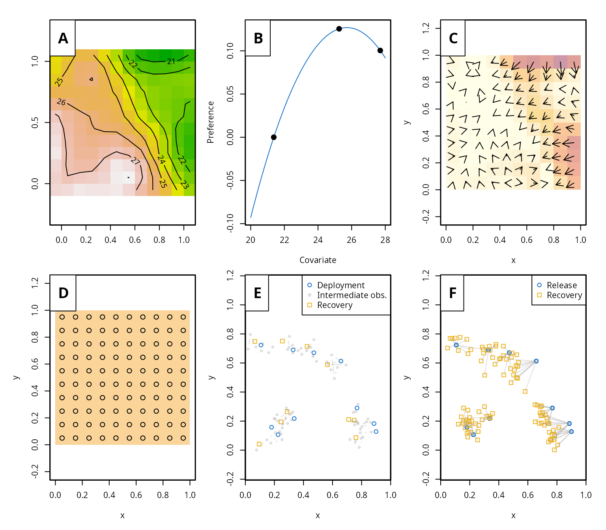
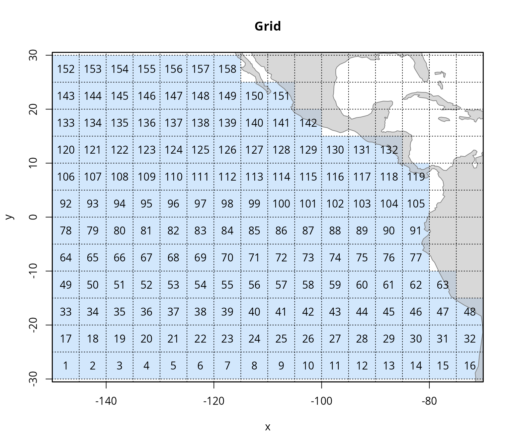
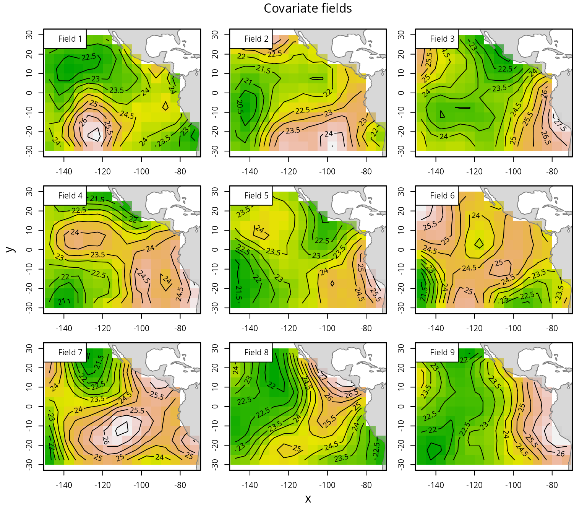
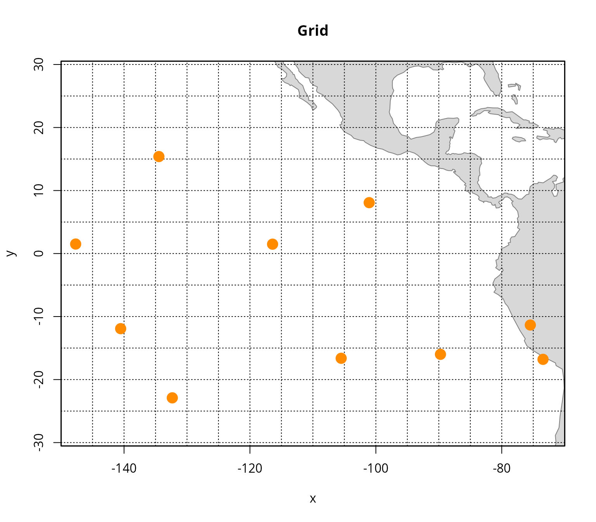
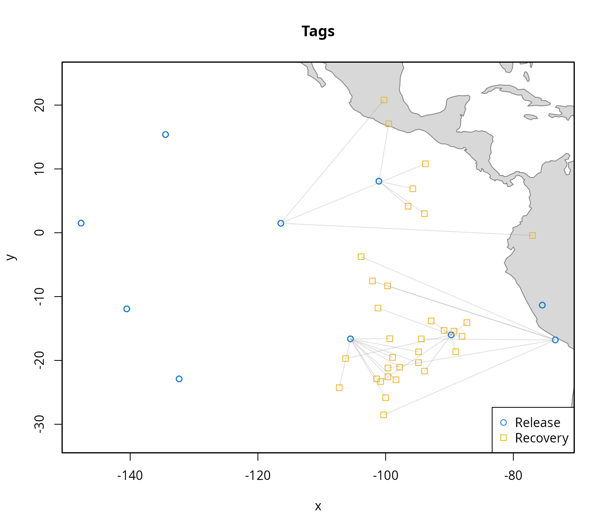
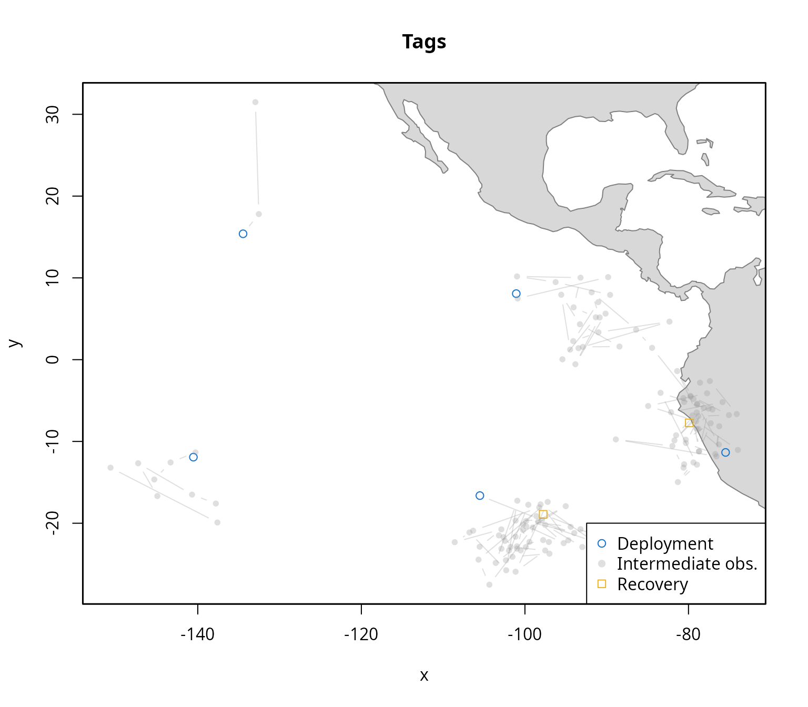
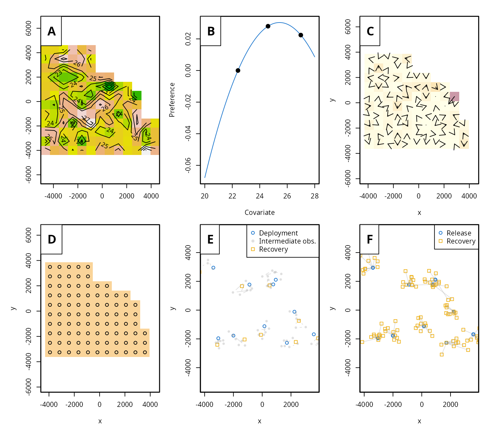

Introduction
This vignette demonstrates how to simulate tagging data using the admove package. It covers both simple simulations using default settings and more customised workflows that include spatial grids, environmental covariates, model parameters, and release strategies for both conventional (mark-recapture) and archival (data-storage) tags.
The simulation tools in admove are designed to support method development, simulation studies, and testing of movement models in ecological applications.
Outline:
- Quick simulation
- Create grid
- Environmental data
- Parameters
- Conventional tags
- Archival tags
- Simulate from fit
- Summary
- References
The examples below require the admove package:
For reproducibility, we set a random seed:
set.seed(123)Quick simulation
The fastest way to simulate tagging data is using the
sim_data() function:
sim <- sim_data()This generates a complete simulated dataset. The returned object
(class admove_sim) contains:
-
sim$grid: spatial grid -
sim$cov: simulated covariate fields -
sim$par_sim: simulation parameters -
sim$tags: simulated tagging data -
sim$dat: processed data for model fitting -
sim$conf,sim$par,sim$map: default configuration, parameters, and mappings
The simulation can be visualised with:
plot(sim)
While convenient, sim_data() relies on default
assumptions. Most of these can be adjusted via its arguments
(?sim_data). For full flexibility, the individual
components can be constructed manually, as shown below.
Create a grid
The first step in a custom simulation is defining a spatial grid. The grid determines the spatial domain, coordinate reference system (CRS), and resolution, and is used to simulate covariate fields.
Here, we construct a grid resembling the eastern Pacific Ocean
(similar to the skjepo example dataset):
xlim <- c(-150, -70)
ylim <- c(-30, 30)
idx <- c(1:63,65:78,81:94,97:110,113:126,129:141,145:154,161:169,177:183)
grid <- create_grid(xrange = xlim,
yrange = ylim,
cellsize = 5,
select = idx,
crs = 4326)The index vector idx specifies selected grid cells,
allowing reproducible selection without interactive input. In practice,
you may instead:
- include all cells (
select = FALSE), - interactively select cells (
select = 1), or - interactively remove cells (
select = 2).
Visualise the grid:
plot(grid, plot_land = TRUE)
Covariate fields
Environmental covariates can be simulated using
sim_cov(). By default, this uses a Matérn spatial
covariance structure and an AR(1) process in time:
cov <- sim_cov(grid, nt = 9, rho_t = 0.4)Here, nine temporal layers are generated with moderate temporal autocorrelation.
plot(cov, plot_land = TRUE)
We also define a temporal reference:
Parameters
Next, we define the movement parameters.
-
alpha: habitat preference (taxis) -
beta: diffusion
Both must be 3D arrays with dimensions:
- number of knots
- number of covariates
- number of time periods
A simple example with constant diffusion and time-invariant preference:
par <- list(
alpha = array(c(0, 20, 10), dim = c(3, 1, 1)),
beta = array(log(5), dim = c(1, 1, 1))
)Knots for the habitat preference function can be defined from covariate quantiles:
Conventional (mark-recapture) tags
We simulate release locations:
release_events <- sim_release_events(grid = grid)
plot(grid, auto_layout = FALSE, labels = FALSE,
plot_bg = FALSE, plot_land = TRUE)
points(release_events[,1], release_events[,2],
col = "darkorange", pch = 16, cex = 2)
Now simulate tagging data:
ctags_simulation <- sim_tags("c",
grid, cov, par,
n_tags = 100,
release_events = release_events,
knots_tax = knots_tax,
knots_dif = knots_dif,
tref = list(origin = "2020-01-01",
units = "month"))
plot(ctags_simulation$tags,
leg_pos = "bottomright",
plot_land = TRUE)
Archival (data-storage) tags
Archival tags are simulated analogously:
dtags_simulation <- sim_tags("d",
grid, cov, par,
n_tags = 5,
release_events = release_events,
knots_tax = knots_tax,
knots_dif = knots_dif,
tref = list(origin = "2020-01-01",
units = "month"))
plot(dtags_simulation$tags,
leg_pos = "bottomright",
plot_land = TRUE)
Simulate from a fitted model
New datasets can also be simulated from an existing fitted model,
such as skjepo$fit:
new_data <- sim_data(skjepo$fit, simulate_cov = FALSE)Setting simulate_cov = FALSE reuses the original
covariate fields, while TRUE generates new ones.
plot(new_data)
By default, release locations and times are random. For more control, users can combine this approach with custom grids, covariates, and release strategies.
Summary
This vignette demonstrated how to simulate tagging data in admove, ranging from quick default simulations to fully customised workflows.
We showed how to:
- define spatial grids and domains,
- simulate environmental covariates with temporal structure,
- specify biologically meaningful movement parameters,
- generate both conventional and archival tagging data, and
- simulate new datasets from fitted models.
These tools allow users to construct realistic and flexible simulation setups that reflect their study system. Carefully designed simulations are essential for evaluating model performance, testing assumptions, and developing robust movement models.
In practice, particular attention should be paid to consistency between spatial and temporal scales, covariate structure, and parameter choices, as these strongly influence the resulting movement dynamics and inference.